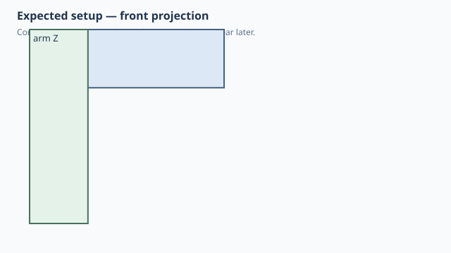

← Qualification / Minimal L-profile
Forge qualification case
NOT RUNQ1 Q2 documented
Minimal L-profile
1. Test setup

Test goal
Provide a deliberately simple reusable L-shaped reference component for later attachment/orientation qualification.
Pass criteria
A clean 40 mm L profile with 12 mm arms and 24 mm symmetric extrusion width.
2. Implementation under test
Fixture source
@dataclass
class Bracket:
"""Minimal L-profile qualification fixture.
Deliberately no holes, fillets or secondary features: this fixture exists
to verify profile geometry, XZ extrusion and later assembly relationships
without unrelated feature behavior obscuring the result.
"""
width: float = 24
arm_length: float = 40
arm_height: float = 12
def build(self):
profile = Polygon2D(
[
(0, 0),
(self.arm_length, 0),
(self.arm_length, self.arm_height),
(self.arm_height, self.arm_height),
(self.arm_height, self.arm_length),
(0, self.arm_length),
],
plane="XZ",
)
return profile.extrude(self.width, direction=Direction.SYMMETRIC)
Bracket()
Public Forge API used
Polygon2D(..., plane='XZ').extrude(width, direction=Direction.SYMMETRIC)
Forge model represented by this fixture
One symbolic L profile extruded symmetrically through its width; no holes, fillets, anchors or secondary features.
3. Generated SolidCraft relationship
Native XZ sketch/polygon plus symmetric extrusion. No assembly commands are present yet.
Show generated relationship / command details
parameters.add
parameters.add
parameters.add
sketch.create
sketch.line
sketch.finish
solid.extrude3. Results
Native result data was not supplied to this site build. Run the native qualification for measured results.
No source-matched native verification was supplied to this site build. The case sheet and command contract are still shown.
6. Evidence and references
Raw evidence
Show generated files and measurements
Reference models
These comparisons clarify concepts; Forge does not promise API compatibility with them.